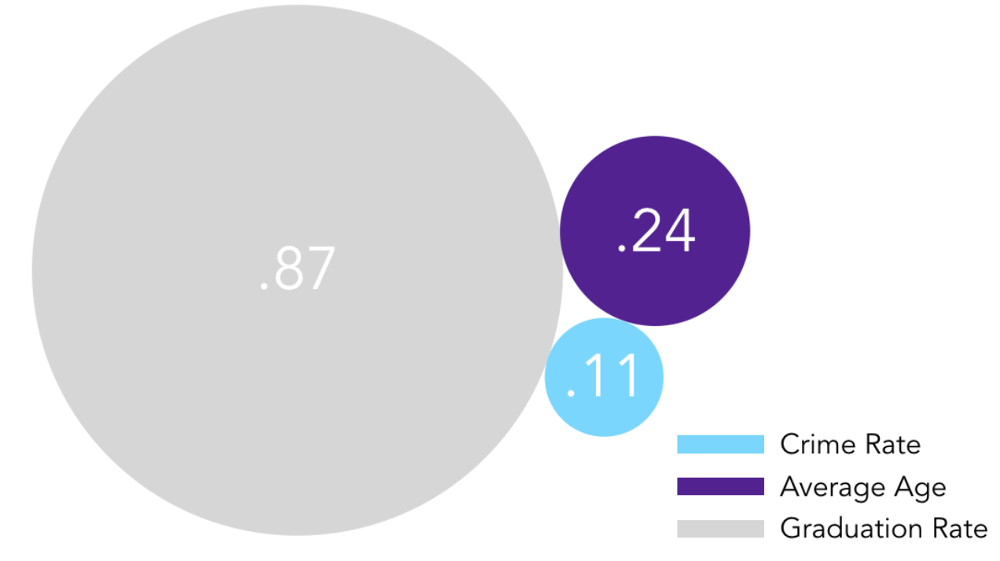
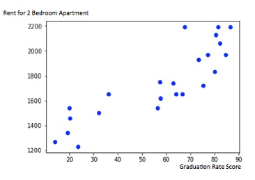
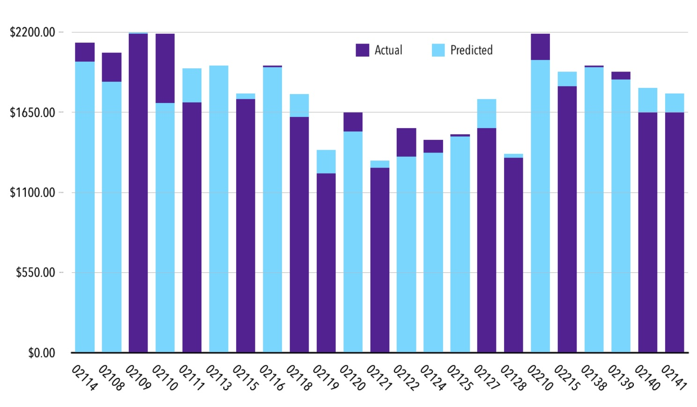

Rental Prices Crime Rate Graduation Rate Average Age Actual vs Predicted
In quick developing metropolitans it becomes harder to find an affordable and appropriate location to raise a family. Housing prices continue to increase and not every neighborhood is the right environment for a kid to grow up and prepare for a successful college career. This project aims to answer the question, “If a family with presumably one or two children who are preparing to go to college were to move to Boston, what would be the most ideal area to move to?” To rate the areas in Boston to answer the posed question, we obtained and scraped data from multiple online sources that included Boston and Cambridge housing rates, crime rates, population by age, corresponding neighborhoods to zip codes and education information.
talk about it here
talk about it here
All of the datasets are organized by zip code, which allowed the creation of 3 datasets that found correlations between 2-bedroom apartment rates, crime rates, college graduation an population by age. To transform the data tiers were created of housing prices and mapped averages of crime data, graduation rates and populations of ages 15-19 for those respective areas. Initially, the housing prices were broken up into tiers for “average Rent 2 bedroom”, based on zipcodes. The crime score for Boston and Cambridge were normalized and assigned by tier. A similar approach was used for the graduation rate data. A MapReduce algorithm was used to average graduation rates per tier, to create education rates per tier. Finally, to indicate what the average age of the population of 15-19 year olds was another MapReduce was used and AgeByTier was created.
For the second part of the project statistical analysis was performed to check correlation between housing prices and crime rates, college graduation rates, and the age of the population.
Lastly, Prices of houses in a given area were predicted; using linear regression values for graduation rates, age by population and crime rates. The results were compared with the value of the houses against the actual prices of the houses to determine whether or not the price reflected the value of the house. This data can be used to advise families that are looking into buying a house in Boston. The results tell whether or not the house they are looking at is a good buy for the asking price.
A limitation of the data, which simplified our job, but additionally is a restriction to the precise location of the house, is that all the data is organized by zip code. Within a single zip code, one can find very different looking 2 bedroom apartments, generalizing by zip code is thus a limitation. Furthermore, crime rate is similarly very generalized data. A family moving to Boston might be interested in violence on the streets, robbery, etc., crime that influences their child safety, rather than for example crime like fraud.